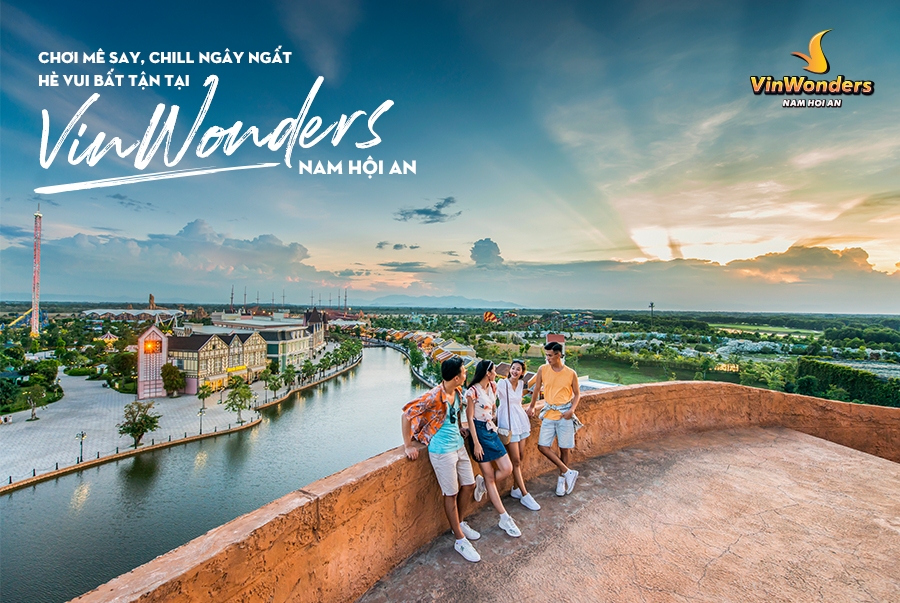
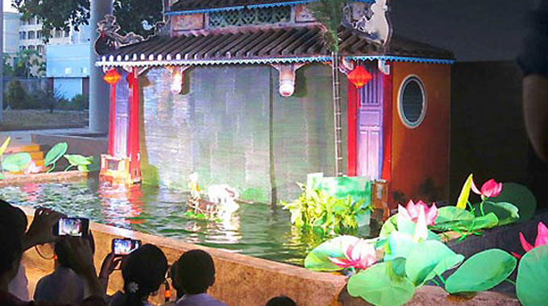
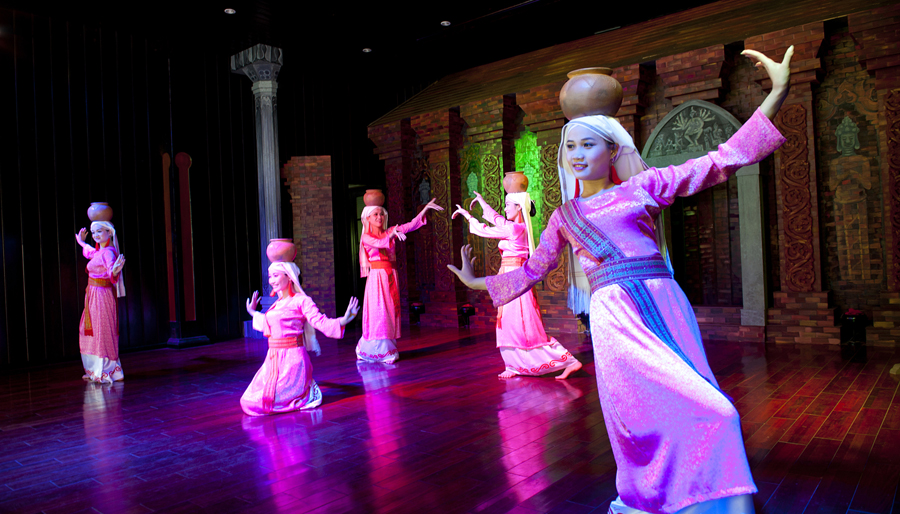
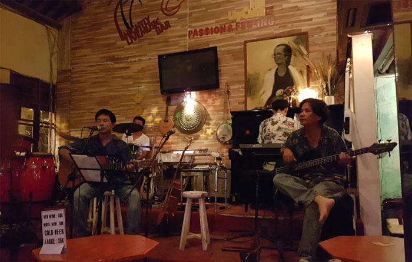

Show diễn thực cảnh ký ức Hội An
Ký ức Hội An không chỉ bữa tiệc của nghệ thuật múa, xiếc, âm thanh, ánh sáng, trang phục… mà còn mang đậm dấu ấn lịch sử.Qua hình ảnh cô gái ngồi bên khung cửi dệt vải, Ký ức Hội An đưa khán giả vào hành trình ngược dòng lịch sử, từ thời khai thiên lập địa. Buổi diễn chia thành 5 phần:
- Phần 1: Tái hiện lại cuộc sống của người dân từ thời khai hoang, qua nét tươi vui, rộn ràng được tái hiện bằng âm nhạc, vũ điệu của các diễn viên múa.
- Phần 2: Tái hiện lễ cưới của vua Chế Mân với Huyền Trân công chúa. Lễ cưới cách đây hơn 700 năm (1306), bạn có biết trước đây vùng đất từ Quảng Bình tới Quảng Nam là đất của người Chăm-pa, vua Chế Mân đã dâng tặng hai châu Ô và Rý cho nhà Trần làm lễ vật cưới Huyền Trân Công Chúa? Đạo diễn đã lồng ghép rất khéo cả bối cảnh lịch sử, văn hóa Chăm-pa vào trong tác phẩm.
- Phần 3: Đưa khán giả đến với câu chuyện tình yêu của cô gái xứ Faifo với người chồng làm nghề đi biển. Cuộc sống của người dân ở Hội An khi ấy chủ yếu là làm nghề đi biển và trồng lúa.
- Phần 4: Là khúc chuyển lớn nhất, khi thuyền buôn từ Trung Quốc, Nhật Bản, Hà Lan, Ba-tư… đến giao thương, biến Hội An thành thương cảng sầm uất, tấp nập nhất Việt Nam. Vùng đất này là nơi duy nhất nhà Nguyễn chọn làm nơi giao thương với nước bạn. Kể từ đấy, Hội An trở thành trung tâm giao lưu của các nền văn hóa khác nhau. Dưới thời nhà Nguyễn, phố cổ Hội An là trung tâm buôn bán, giao lưu văn hóa quan trọng với bạn bè quốc tế.
- Phần cuối cùng: Xuyên suốt mấy trăm năm lịch sử ấy, cô gái Việt vẫn ngồi lặng lẽ bên khung cửi dệt vải. Tiếng khung cửi khi trầm, khi bổng nhưng chưa bao giờ ngừng, giống như mảnh đất này, dù trải qua bao thời kỳ, bao sóng gió vẫn đứng vững, gìn giữ giá trị văn hóa, nét đặc trưng của người Hội An, từ đấy trở thành điểm đến hàng đầu ở Việt Nam và Đông Nam Á.
Khu vui chơi VinWonders Nam Hội An
Khu vui chơi VinWonders Nam Hội An là thiên đường vui chơi giải trí đẳng cấp quốc tế tại Quảng Nam. Tổ hợp gồm: khu vui chơi ngoài trời, khu vui chơi trong nhà, khu safari trên sông duy nhất ở Việt Nam, khu đảo dân gian, công viên nước (bãi tắm, khu vui chơi cảm giác mạnh, khu vui chơi gia đình và khu vui chơi dành cho trẻ em) phù hợp với mọi thành viên trong gia đình ở mọi lứa tuổi...Khu vui chơi VinWonders Nam Hội An này rộng đến hơn 62.4 héc ta, cách thành phố Đà Nẵng tầm 42 km, cách thành phố Hội An khoảng 17km, cách thành phố Tam Kỳ 36 km và cách thành phố Huế 150km.
Biểu diễn nghệ thuật múa rối nước
Múa rối nước là loại hình nghệ thuật diễn xướng dân gian đặc trưng cho nền văn minh lúa nước lâu đời của người Việt. Hoạt động múa rối có mặt ở nhiều quốc gia trên thế giới nhưng chỉ ở Việt Nam mới có loại hình múa rối nước. Nghệ thuật múa rối nước Hội An với nhiều tiết mục được dàn dựng công phu qua sự trình diễn của các nghệ sỹ chuyên nghiệp, giàu kinh nghiệm cùng với sự đầu tư kỹ lưỡng về nội dung, thủy đình, con rối, âm thanh, ánh sáng…sẽ giúp du khách thực sự được hòa mình vào trong không gian nghệ thuật mang đậm phong cách văn hóa Việt Nam và xứ Quảng.
Biểu diễn nghệ thuật cổ truyền
Biểu diễn nghệ thuật cổ truyền là điểm đến mang lại nhiều sự thích thú cho đông đảo du khách trong nước và quốc tế. Hoạt động nghệ thuật cổ truyền góp phần rất lớn trong việc bảo tồn các giá trị văn hoá của địa phương. Nhiều chương trình, tiết mục đặc sắc như hô hát bài chòi, các tiết mục dân ca Quảng Nam, dân ca Trung Trung Bộ và đặc biệt là các làn điệu dân ca quốc tế của 12 nước có mối quan hệ bang giao với Hội An trong quá khứ. Nghệ thuật cổ truyền trở thành một sản phẩm văn hóa phục vụ du lịch tại Hội An và được mời tham gia biểu diễn tại các quốc gia như Hồng Kông, Thái Lan, Ý...Đến với khu đền tháp Mỹ Sơn ngoài tham quan khu đền tháp, bạn sẽ có cơ hội thưởng thức các điệu múa Chăm truyền thống duyên dáng, uyển chuyển nhưng cũng đầy huyền bí và quyến rũ. Đây là hoạt động văn hóa phi vật thể được tái hiện sinh động với những trích đoạn lễ hội Chăm, múa cung đình, múa tôn giáo từ vũ điệu Siva, Apsara đến nét vui tươi trong múa quạt, múa đội nước. Mỗi vũ điệu mang một nét riêng, tạo nên không gian văn hóa Chăm lung linh, huyền ảo.
Nghe nhạc phòng trà
Đến với các quán café nhạc, bạn sẽ để trải lòng với những giai điệu du dương từ các ban nhạc. Mỗi ban nhạc của mỗi quán có cách phối nhạc, remix nhạc khác nhau để bạn lựa chọn.
